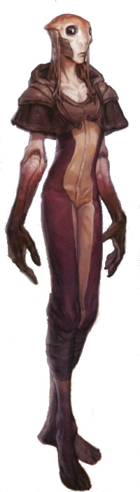

Phydolon
phydolon
Special Abilities: Phydolons begin the game with one rank in Cool or Discipline. They still may not train Cool or Discipline above rank 2 during character creation.
Symbiotic Resilience: When recovering wounds naturally, Phydolons heal 1 extra wound per full night’s rest. In addition, a Phydolon may attempt to recover naturally from one Critical Injury after a full night’s rest, instead of after a full week.
Symbiont Isolation: If no other Phydolons are present when a Phydolon recovers strain at the end of an encounter, they recover 1 less strain to a minimum of 1.
Only newly introduced to the galactic stage, their world having recently been discovered by galactic explorers, the Phydolons are an enigmatic species whose provincial ways seem quaint and even naive to the more jaded travelers they meet. Yet, the simplicity that many perceive as ignorance belies an ageless wisdom and deep well of spirituality that has now awakened to the wider galaxy.
The Phydolons are a paired symbiotic species, composed of the mammalian Agarans and fungal rhizome Orucytes. They are inseparable, as the species have coevolved for millions of years. Fungal tissues exist throughout the entire body of each Phydolon, forming membranes and threads laced through the flesh and organs, even the brain. These threads perform vital functions within the tissues of the Orucyte’s symbiotic partner. The Agaran acts as the “host, ” providing the locomotion for the pair. Beyond that, both beings are in total unison.
Phydolons are bipedal humanoids with long, gangly limbs, knobbed joints, and hands with an opposable thumb and three long fingers tipped with hard, almost bark-like nails. Their heads are broad and sloping, and their eyes are large, lidless orbs with a central pupil, white iris, and dark-colored sclera veined through with white fungal threads. The average Phydolon stands roughly two meters tall and weighs significantly less than a human of comparable height.
Little is known about either species prior to their coevolution, but a few details can be surmised. Many a galactic biologist has theorized that without the unique symbiosis of the Agarans and Orucytes, neither species would have ever achieved self-awareness. Spores similar to those of the Orucytes are found throughout the soil and lowland atmosphere of Mydasos, though in no other example have they reached the genetic complexity of their sapient kin. Likewise, mammalian predecessor-species exist across the continents of Mydasos, yet the Agarans are the only mammals that have achieved sentience, spiritual enlightenment, and culture.
Both the Agarans and the Orucytes have their own consciousness, but due to the neural integration of the fungal threads within the brain tissue, a Phydolon’s mind is both a pair of individuals and a blended whole. In this way, a single Phydolon is both two minds and one. Indeed, due to the rhizomatic nature of the Orucytes, Phydolons share a limited sort of intraspecies gestalt consciousness. The fungal rhizome is millions of years old, and through it, Phydolons are born with a legacy of genetic memory. Individuals are not part of a hive mind, nor do they share the thoughts, opinions, or knowledge of either their contemporaries or ancestors. Instead, the gestalt consciousness manifests as a heightened instinct, a powerful sense of belonging and community, and a feeling of being part of something greater than themselves.
Such a mindset is fertile ground for a deeply spiritual society. Given their relative isolation from the wider galaxy and penchant for contemplation, the Phydolons live a highly communal, nearly monastic life. In close-knit communities spread across Mydasos, each individual acts and provides according to that being’s capability and personal drives, yet all is done with an underlying concern for the whole, without the need for structured government or enforced social order. The Phydolons are led by wise and charismatic leaders who rise to power not through any formal election or ordainment, but by the gestalt will of the community.
Mydasos, the homeworld of the Phydolons and the only planet to boast a native population of the species, is a nearly undiscovered backwater world between the Corellian Trade Spine and the Hydian Way, nestled comfortably in the largely unexplored Dalicron sector. The only life-bearing planet orbiting its star, Mydasos went utterly unnoticed by interstellar exploration until relatively recently. What the first explorers found was a world teeming with life, a primordial landscape midway through the slow evolutionary march from boggy marshland to continent-spanning forest. Dozens of small, shallow seas dot the globe, the majority of the planet’s liquid water saturating the soil of the largely unbroken landmasses. Craggy mountains erupt from the dense primeval forests, their roots resting in the shallow swamps.
Both flora and fauna thrive on Mydasos. Its land and shallow oceans are home to a staggering number of species, given the limited number of distinct climates and biomes that stretch around the planet’s equatorial and temperate zones.
The enclaves of the Phydolons are scattered across the surface of Mydasos, and their structure and architecture take two primary forms. In the lowland marshes, towering trees are connected by wooden platforms and pathways suspended just above the wet ground. Hide canopies are hung from wooden poles to provide shelter from the elements, but walls and doors are all but unheard of. Privacy is a concept foreign to the Phydolons. In the mountainous highlands, cliffsides serve as the foundations for similar platforms and pathways, hung by long, root-tendril ropes anchored to the raw stone. In those chilly heights, walls and enclosures are more common, to protect against the buffeting winds and frequent storms.
Of course, all sentient life forms eventually develop the capacity to communicate among themselves, and the Phydolons are no different, though many offworlders consider their natural language to be primitive and underdeveloped. Few outside the ranks of learned xenoanthropologists realize that when Phydolons are in close proximity, they are able to directly convey emotional meaning more accurately than most sentient species. It is for this reason that the Phydolons’ verbal language need not possess the complexity others do. Among the Phydolons, a few simple words and a wave of empathic context is as complex and evocative as any exchange in Basic. Unfortunately, this transmitted empathy does not extend to sentients outside their species, who lack any connection to the Orucytes’ rhizome. Phydolons are, however, able to learn and speak other species’ languages, though they find them needlessly complex.
Due to the unique nature of their symbiotic society, the Phydolons find the notion of the Living Force familiar and welcome. Their existence is fundamentally defined by interconnectivity with others, much as the Force flows through and connects all things. In the ages prior to their discovery by galactic explorers, those Phydolons who possessed a sensitivity to the Force were known as visionaries whose consciousness extended beyond their enclave, beyond even their homeworld. As such, most Force-sensitive Phydolons see the Force as something that binds the universe together, not something to be exploited for personal gain or power.
Only rarely does a Phydolon choose to leave the collective of the species’ homeworld. Distance from the Mydasos rhizome causes the Orucyte symbiont to feel muted and isolated, which inevitably promotes similar feelings for the Agaran. Such separation from the Orucyte’s rhizomatic connection is disorienting in the extreme, and most Phydolons who leave must go through a difficult adjustment period. Those who have spent too much time away from their kind may exhibit neurotic behavior.
Now that members of their species have experienced their first footsteps into the wider galaxy, it is becoming clear that those Phydolons with a connection to the Force are better able to cope with separation from their own kind for extended periods of time. Some speculate that this is due to their sense of oneness with something larger than themselves, in the Force.